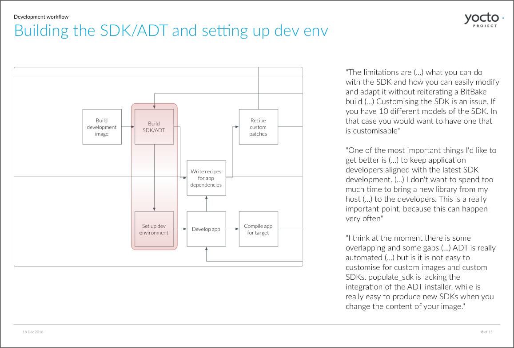

Research inspired by ethnography

An OpenEmbedded maintainer runs an impromptu training session at the Yocto Project booth during an Embedded Linux conference.
Why "inspired by" and not just "ethnography"?
I have a nagging suspicion that a lot of what's currently called "ethnography" in industry settings shouldn't really be called so. Ethnography is an academic endevour. Its main goal is to develop social theory.
It is true that ethnography research methods (participant observation and interviews) are widely used in commercial design research. However, observing and interviewing by themselves do not make ethnography. Two other things must happen:
- Substantial amounts of time. How much time exactly, I am not sure, but I don't think I've come across any ethnographic work based on less than a year of field research.
- Rigorous and systematic analysis of the materials gathered. Given the time constraints in commercial projects, I seriously doubt that the analysis carried out is rigorous and systematic enough to qualify as "ethnography".
So what?
This in no way diminishes the value of ethnography-inspired design research in industry settings.
When doing this kind of thing, our goal is not to develop social theory, but to gather actionable insights that can be translated into successful new products and features. And at that, ethnography-inspired research excels.
I have also found it to be the best way of carrying out design research in resource constrained situations. As a design team of one in the Yocto Project, I applied ethnography-inspired design research for 5 years, with remarkable outcomes. I did this through:
Regular interviews
A quote from a user interview I often used in presentations to explain the frustrations derived from system complexity
I carried out a continuous programme of user interviews, scheduling them at regular intervals. Because design work took the bulk of my time, I aimed for one interview a month.
Since my users were scattered around the world, interviews were done over the phone, Skype or Google Hangouts.
I recruited through mailing lists, instant messaging channels, social networks and conferences, being opportunistic and always keeping an eye for prospecting interviewees.
I recorded all interviews and transcribed some of them, but there was almost never time to write formal reports. When possible, I documented the outcome of interviews via email or wrote short briefings. Below are some sample pages from one of those briefings.
Some pages from a brief report documenting findings from user interviews
To compensate for the lack of analysis and communication, I would invite one of the engineers in my team to join the interviews. That ensured a certain degree of knowledge transfer.
We often, as a team, gave the interviews a generic theme. How people get started with Yocto Project, how is the application development workflow with Yocto Project distributions, and how teams deal with continuous integration were some of those themes.
The insights we gathered through these interviews fed into feature planning and new tooling initiatives. Both the extensible SDK and devtool, two new command line tools aimed at application developers, were very much driven by our continuous interviewing programme.
Some of the insights from user interviews that prompted the development of devtool and the extensible SDK
Lurking
This is how I carried out participant observation: I lurked everywhere. In mailing lists, in instant messaging channels (IRC), in Stack Overflow, in LinkedIn groups, in social media, in the Embedded Linux conferences and OpenEmbbedded meetings, in webinars and training sessions. Anywhere I could.
Lurking is a bottomless source of information, providing insights on users's frustrations, common questions and perceptions, all of which is valuable contextual knowledge that can feed into design work.
Users voice their frustrations in public channels, providing useful insights for design researchers
In a free or open source project, lurking also reveals community dynamics. Considering those dynamics is critical when devising appropriate design processes (like our public design reviews), and choosing certain approaches (e.g. prototyping) over others (e.g. long design specifications). Understanding the community will also tell you how to communicate the value of your work effectively, and get buy in for design initiatives.
In exchange for all this goodness, lurking asks only for one thing: discipline. I had designated lurking time within my work day, to make sure I didn't stop doing it and did it enough to reap its full benefits.
- I started my days going through the messages in the mailing lists, and skimming through the IRC channel logs from the previous day.
- I joined the IRC channels first thing in the morning and paid a bit of attention to what was going on in them. It's distracting at the beginning, but you get the hang of it quite quickly.
- I set up notifications for forums, social media channels and the like, and went through those every morning too.
Space and performance were some of the common complaints engineers had about OpenEmbedded
In return for dedicating 5% of my working time to lurking, I acquired a deep understanding of my users and community, and compiled a pool of anecdotal evidence I could use to justify design decisions.
Feeling the pain

Yours truly learning how to solder at the Noisebridge hackspace in San Francisco
I mean feeling my users's pain.
My users were free and open source software (FOSS) engineers. I was researching (and designing) tools they would use every day. In order to understand what that day was like, observing just wasn't enough: I needed to experience it. And so I did.
- I learnt Git, the version control system most of them used. Becoming comfortable with Git took the best part of two years, but it was completely worth it. If you can, learn Git too.
- I started to submit patches. A patch is a fancy name for a snippet of code that you want to incorporate to a software application. Most of my users would submit code to a main source tree in one way or another as part of their work routine. Doing so myself gave me a subtle understanding of how software development works and what it demands from engineers.
- I started to use a text editor on Linux when doing a little coding and played with Eclipse, since they were the types of tools my users worked with.
- I learnt how to solder, played with electronics and embedded boards, the types of computers my users developed for.
- I visited hackspaces and Fab Labs.
- I joined the FOSS community. I help organise a developer room at the Free and Open Source Developers European Meeting (FOSDEM), and took on the logistics of the OpenEmbedded booth there as well.
- I attended (and spoke at) as many Embedded Linux conferences as I possibly could, spending many hours in the Yocto Project booth talking to users and community members.
- And most important of all: I spent time with software engineers and listened to them. I sat in the same office as them, I had lunch with them, I had drinks with them, and listened to what they said with genuine interest and close attention. This is, after all, what ethnography is really about.
With this "feeling the pain" approach, research happens every day: it becomes more an attitute than a set of activities.
I must confess this was the most demanding form of design research I've ever carried out, but it was also by far the most rewarding.